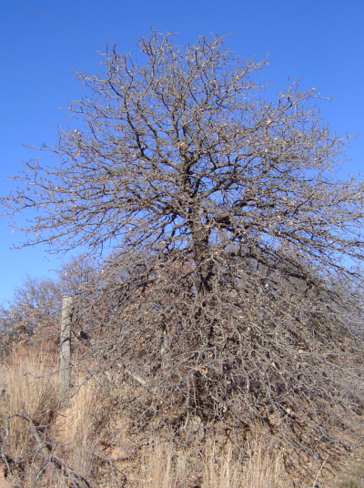
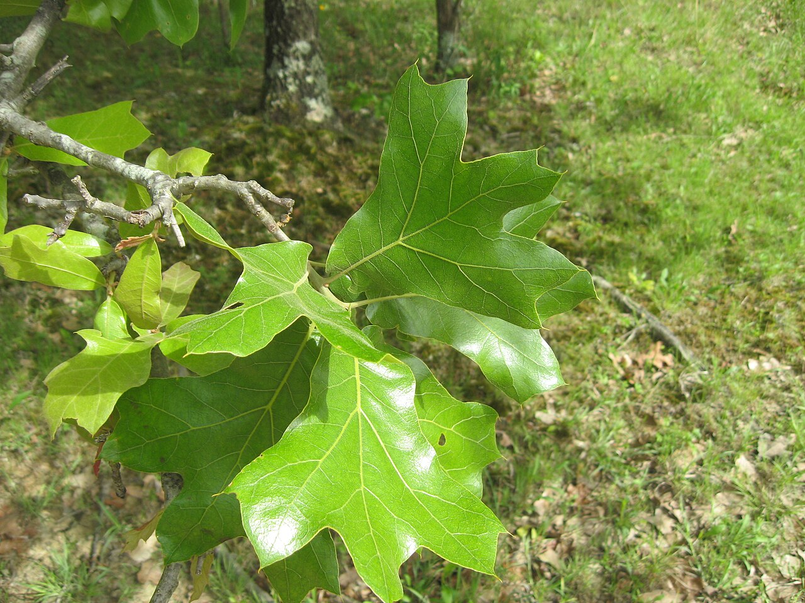
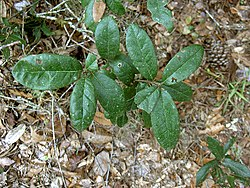
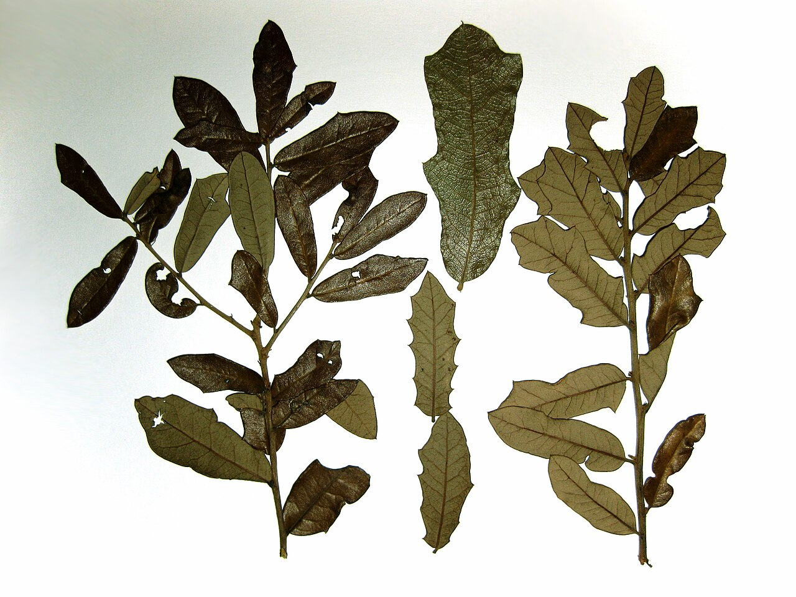
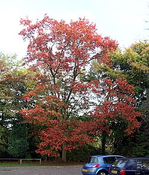
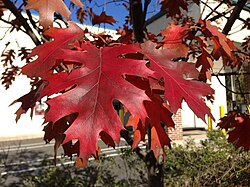

Dichotomous Key
AI 101
What is a Dichotmous Key?

Why do we care?
Single access keys are closely related to decision trees and binary search trees. However, to improve the usability and reliability of keys, many single-access keys incorporate reticulation, changing the tree structure into a directed acyclic graph. Single-access keys have been in use for several hundred years.
- They:
- Predate computers, yet
- Use state-of-the-art techniques in computing.
- We study them as a way to understand AI
Motivating Example
- I learned about dichtomous keys in biology class, and only realized the connection years latter.
- In the spirit of good ole biology, a real science, we will study the example of “botanical classification of oaks.”
- Please under absolutely no circumstances ask me anything about biology.
- I do not know and will embarrass myself and may confuse or even horrify you.
- Biology is cool though!
The Key
- Basically, a key is a branching series of yes/no questions.
- The dichotomous key gets its name from having two (“di”) possibilities for any case
- “yes” and “no” or “true” and “false” or etc. etc.
- To classify an oak, there are a series of questions that a non-expert can answer by inspecting the tree, such as being looking at the whole tree or looking at its leaves.
- After answer a question, there is either a reference to a new question, usually by number, or a note that you have determined what the type of tree is.
Example
1. Leaves usually without teeth or lobes: 2
1. Leaves usually with teeth or lobes: 5
2. Leaves evergreen: 3
2. Leaves not evergreen: 4
3. Mature plant a large tree — Southern live oak Quercus virginiana
3. Mature plant a small shrub — Dwarf live oak Quercus minima
4. Leaf narrow, about 4-6 times as long as broad — Willow oak Quercus phellos
4. Leaf broad, about 2-3 times as long as broad — Shingle oak Quercus imbricaria
5. Lobes or teeth bristle-tipped: 6
5. Lobes or teeth rounded or blunt-pointed, no bristles: 7
6. Leaves mostly with 3 lobes — Blackjack oak Quercus marilandica
6. Leaves mostly with 7-9 lobes — Northern red oak Quercus rubra
7. Leaves with 5-9 deep lobes — White oak Quercus alba
7. Leaves with 21-27 shallow lobes — Swamp chestnut oak Quercus prinusVisually
- You may have to zoom in…
Some oaks
- One problem with using pictures of oaks on the internet is that they usually named something like “I am this type of oak”.png (Portable Network Graphic - the type of image it is) and then when you ask Gemini what type of oak it is, Gemini just reads the name.
- Not to worry, I downloaded a bunch of pictures of oaks and changed their names.
- I have given them a temporary name and used “spoiler tags” to hide the actual name.
- For each tree, I provide an image of the tree and an image of leaves.
- All are sourced from Wikipedia and appropriately licensed, with the links to the host page in the key.
Key
Click “Details” to expand
| Nickname | Common Name | Scientific Name |
|---|---|---|
| A | Blackjack oak | Quercus marilandica |
| B | Dwarf live oak | Quercus minima |
| C | Northern red oak | Quercus rubra |
Oak A


Oak B


Oak C


Sorting Oaks
- Pick one of the three oaks, work through the key, then check your answer!
Take notes
- Create a “Lab03” Colab notebook (NOT a Google Document) in your AI Folder.
- Create a text cell in this Colab notebook.
- Record 140-280 characters worth of thoughts on working through the key - more if you have more thoughts.
Computer Vision
- Prof. Rachel Brown in the CS department is a computer vision researcher and helped develop this course!
- We will use the dichotomous key and Google Gemini to to classify oaks, from their images, as one of the 8 species in our key.
Your Task
- To implement our dichotomous key we will:
- Share images with Gemini
- Ask Gemini a question about the images.
- Based on the answer, either:
- Ask a new question, or
- Give a result, the classification of the tree.
- To do so we will use “if/else” syntax.
If/else Syntax
- Like
whilewhich we learned in the “Colab” lab, we can useifandelseto ask Gemini questions more than once.- For example, we can ask if leaves are “smooth” or “lobed”.
ifGemini says “smooth”, we can then ask if the leaves are evergreen.elsewe can ask if the lobes (or teeth) are bristle-tipped.